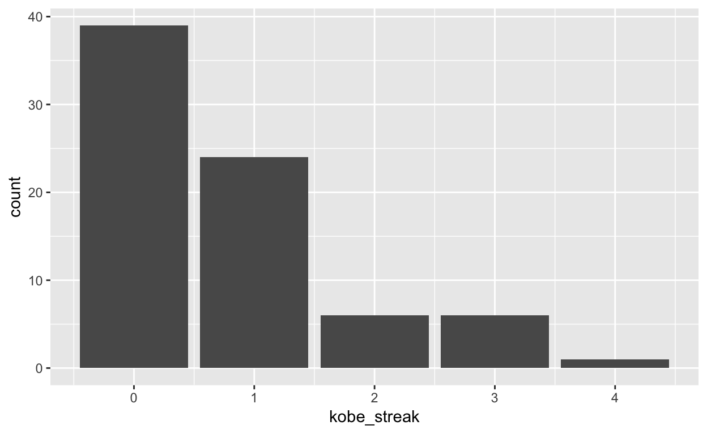

Basketball players who make several baskets in succession are described as having a hot hand. Fans and players have long believed in the hot hand phenomenon, which refutes the assumption that each shot is independent of the next. However, a 1985 paper by Gilovich, Vallone, and Tversky collected evidence that contradicted this belief and showed that successive shots are independent events (http://psych.cornell.edu/sites/default/files/Gilo.Vallone.Tversky.pdf). This paper started a great controversy that continues to this day, as you can see by Googling hot hand basketball.
We do not expect to resolve this controversy today. However, in this lab we’ll apply one approach to answering questions like this. The goals for this lab are to (1) think about the effects of independent and dependent events, (2) learn how to simulate shooting streaks in R, and (3) to compare a simulation to actual data in order to determine if the hot hand phenomenon appears to be real.
Our investigation will focus on the performance of one player: Kobe Bryant of the Los Angeles Lakers. His performance against the Orlando Magic in the 2009 NBA finals earned him the title Most Valuable Player and many spectators commented on how he appeared to show a hot hand. Let’s load some data from those games and look at the first several rows.
download.file("http://www.openintro.org/stat/data/kobe.RData", destfile = "kobe.RData")
load("kobe.RData")
head(kobe)In this data frame, every row records a shot taken by Kobe Bryant. If he hit the shot (made a basket), a hit, H, is recorded in the column named basket, otherwise a miss, M, is recorded.
Just looking at the string of hits and misses, it can be difficult to gauge whether or not it seems like Kobe was shooting with a hot hand. One way we can approach this is by considering the belief that hot hand shooters tend to go on shooting streaks. For this lab, we define the length of a shooting streak to be the number of consecutive baskets made until a miss occurs.
For example, in Game 1 Kobe had the following sequence of hits and misses from his nine shot attempts in the first quarter:
\[ \textrm{H M | M | H H M | M | M | M} \]
To verify this use the following command:
kobe$basket[1:9]## [1] "H" "M" "M" "H" "H" "M" "M" "M" "M"Within the nine shot attempts, there are six streaks, which are separated by a “|” above. Their lengths are one, zero, two, zero, zero, zero (in order of occurrence).
The custom function
calc_streak## function(x){
## y <- rep(0,length(x))
## y[x == "H"] <- 1
## y <- c(0, y, 0)
## wz <- which(y == 0)
## streak <- diff(wz) - 1
## return(streak)
## }which was loaded in with the data, may be used to calculate the lengths of all shooting streaks and then look at the distribution.
kobe_streak <- calc_streak(kobe$basket)
library(tidyverse)
ggplot(data.frame(kobe_streak = kobe_streak), aes(x = kobe_streak)) + geom_bar()
Note that instead of making a histogram, we chose to make a bar plot of the streak data. A bar plot is preferable here since our variable is discrete – counts – instead of continuous.
Describe the distribution of Kobe’s streak lengths from the 2009 NBA finals. What was his typical streak length? How long was his longest streak of baskets?
We’ve shown that Kobe had some long shooting streaks, but are they long enough to support the belief that he had hot hands? What can we compare them to?
To answer these questions, let’s return to the idea of independence. Two processes are independent if the outcome of one process doesn’t effect the outcome of the second. If each shot that a player takes is an independent process, having made or missed your first shot will not affect the probability that you will make or miss your second shot.
A shooter with a hot hand will have shots that are not independent of one another. Specifically, if the shooter makes his first shot, the hot hand model says he will have a higher probability of making his second shot.
Let’s suppose for a moment that the hot hand model is valid for Kobe. During his career, the percentage of time Kobe makes a basket (i.e. his shooting percentage) is about 45%, or in probability notation,
\[ P(\textrm{shot 1 = H}) = 0.45 \]
If he makes the first shot and has a hot hand (not independent shots), then the probability that he makes his second shot would go up to, let’s say, 60%,
\[ P(\textrm{shot 2 = H} \, | \, \textrm{shot 1 = H}) = 0.60 \]
As a result of these increased probabilites, you’d expect Kobe to have longer streaks. Compare this to the skeptical perspective where Kobe does not have a hot hand, where each shot is independent of the next. If he hit his first shot, the probability that he makes the second is still 0.45.
\[ P(\textrm{shot 2 = H} \, | \, \textrm{shot 1 = H}) = 0.45 \]
In other words, making the first shot did nothing to effect the probability that he’d make his second shot. If Kobe’s shots are independent, then he’d have the same probability of hitting every shot regardless of his past shots: 45%.
Now that we’ve phrased the situation in terms of independent shots, let’s return to the question: how do we tell if Kobe’s shooting streaks are long enough to indicate that he has hot hands? We can compare his streak lengths to someone without hot hands: an independent shooter.
While we don’t have any data from a shooter we know to have independent shots, that sort of data is very easy to simulate in R. In a simulation, you set the ground rules of a random process and then the computer uses random numbers to generate an outcome that adheres to those rules. As a simple example, you can simulate flipping a fair coin with the following.
outcomes <- c("heads", "tails")
sample(outcomes, size = 1, replace = TRUE)## [1] "heads"The vector outcomes can be thought of as a hat with two slips of paper in it: one slip says heads and the other says tails. The function sample draws one slip from the hat and tells us if it was a head or a tail.
Run the second command listed above several times. Just like when flipping a coin, sometimes you’ll get a heads, sometimes you’ll get a tails, but in the long run, you’d expect to get roughly equal numbers of each.
Simulate flipping a fair coin 100 times. Use table() to show the distribution of heads and tails in this sample of size 100.
outcomes <- c("heads", "tails")sim_fair_coin <- sample(outcomes, size = 100, replace = TRUE)
table(sim_fair_coin)Since there are only two elements in outcomes, the probability that we “flip” a coin and it lands heads is 0.5.
In the next exercise we want to simulate an unfair coin. Try to figure out how to do this by looking at the help file of sample.
Simulate flipping an unfair coin 100 times, that only lands heads 20% of the time. Use again table() to show the distribution of heads and tails in this sample of size 100.
outcomes <- c("heads", "tails")sim_unfair_coin <- sample(outcomes, size = 100, replace = TRUE, prob = c(0.2, 0.8))
#prob=c(0.2, 0.8) indicates that for the two elements in the `outcomes` vector,
#we want to select the first one, `heads`, with probability 0.2 and the second
#one, `tails` with probability 0.8
table(sim_unfair_coin)In a sense, we’ve shrunken the size of the slip of paper that says “heads”, making it less likely to be drawn and we’ve increased the size of the slip of paper saying “tails”, making it more likely to be drawn. When we simulated the fair coin, both slips of paper were the same size. This happens by default if you don’t provide a prob argument; all elements in the outcomes vector have an equal probability of being drawn.
Simulating a basketball player who has independent shots uses the same mechanism that we use to simulate a coin flip. To simulate a single shot from an independent shooter with a shooting percentage of 50% we type,
outcomes <- c("H", "M")
sim_basket <- sample(outcomes, size = 1, replace = TRUE)To make a valid comparison between Kobe and our simulated independent shooter, we need to align both their shooting percentage and the number of attempted shots.
What change needs to be made to the sample() function so that it reflects a shooting percentage of 45%? Make this adjustment, then run a simulation to sample 133 shots. Assign the output of this simulation to a new object called sim_basket.
outcomes <- c("H", "M")sim_basket <- sample(outcomes, size = 133, replace = TRUE, prob = c(0.45, 0.55))
table(sim_basket)Note that we’ve named the new vector sim_basket, the same name that we gave to the previous vector reflecting a shooting percentage of 50%. In this situation, R overwrites the old object with the new one, so always make sure that you don’t need the information in an old vector before reassigning its name.
With the results of the simulation saved as sim_basket, we have the data necessary to compare Kobe to our independent shooter. We can look at Kobe’s data
kobe$basket## [1] "H" "M" "M" "H" "H" "M" "M" "M" "M" "H" "H" "H" "M" "H" "H" "M" "M"
## [18] "H" "H" "H" "M" "M" "H" "M" "H" "H" "H" "M" "M" "M" "M" "M" "M" "H"
## [35] "M" "H" "M" "M" "H" "H" "H" "H" "M" "H" "M" "M" "H" "M" "M" "H" "M"
## [52] "M" "H" "M" "H" "H" "M" "M" "H" "M" "H" "H" "M" "H" "M" "M" "M" "H"
## [69] "M" "M" "M" "M" "H" "M" "H" "M" "M" "H" "M" "M" "H" "H" "M" "M" "M"
## [86] "M" "H" "H" "H" "M" "M" "H" "M" "M" "H" "M" "H" "H" "M" "H" "M" "M"
## [103] "H" "M" "M" "M" "H" "M" "H" "H" "H" "M" "H" "H" "H" "M" "H" "M" "H"
## [120] "M" "M" "M" "M" "M" "M" "H" "M" "H" "M" "M" "M" "M" "H"alongside our simulated data sim_basket.
Both data sets represent the results of 133 shot attempts, each with the same shooting percentage of 45%. We know that our simulated data is from a shooter that has independent shots. That is, we know the simulated shooter does not have a hot hand.
Simulate again sim_basket in your RStudio session. Then use calc_streak to compute the streak lengths of sim_basket.
Describe the distribution of streak lengths. What is the typical streak length for this simulated independent shooter with a 45% shooting percentage? How long is the player’s longest streak of baskets in 133 shots?
If you were to run the simulation of the independent shooter a second time, how would you expect its streak distribution to compare to the distribution from the question above? Exactly the same? Somewhat similar? Totally different? Explain your reasoning.
How does Kobe Bryant’s distribution of streak lengths compare to the distribution of streak lengths for the simulated shooter? Using this comparison, do you have evidence that the hot hand model fits Kobe’s shooting patterns? Explain.
This tutorial is released under a Creative Commons Attribution-ShareAlike 3.0 Unported. This lab was adapted from an OpenIntro R Lab by Andrew Bray and Mine Çetinkaya-Rundel.